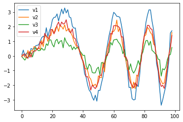

import itstgcn
import torch
import numpy as npKeras
import
import matplotlib.pyplot as pltimport randomfrom torch_geometric.nn import ChebConvimport pandas as pddef load_data(fname):
with open(fname, 'rb') as outfile:
data_dict = pickle.load(outfile)
return data_dict
def save_data(data_dict,fname):
with open(fname,'wb') as outfile:
pickle.dump(data_dict,outfile)from plotnine import *import numpy as np
import pandas as pd
# torch
import torch
import torch.nn.functional as F
from torch_geometric_temporal.nn.recurrent import GConvGRU
# utils
import copy
# rpy2
from rpy2.robjects.vectors import FloatVector
import rpy2.robjects as robjects
from rpy2.robjects.packages import importr
import rpy2.robjects.numpy2ri as rpyn
GNAR = importr('GNAR') # import GNAR
#igraph = importr('igraph') # import igraph
ebayesthresh = importr('EbayesThresh').ebayesthreshdef make_Psi(T):
W = np.zeros((T,T))
for i in range(T):
for j in range(T):
if i==j :
W[i,j] = 0
elif np.abs(i-j) <= 1 :
W[i,j] = 1
d = np.array(W.sum(axis=1))
D = np.diag(d)
L = np.array(np.diag(1/np.sqrt(d)) @ (D-W) @ np.diag(1/np.sqrt(d)))
lamb, Psi = np.linalg.eigh(L)
return Psidef trim(f):
f = np.array(f)
if len(f.shape)==1: f = f.reshape(-1,1)
T,N = f.shape
Psi = make_Psi(T)
fbar = Psi.T @ f # apply dft
fbar_threshed = np.stack([ebayesthresh(FloatVector(fbar[:,i])) for i in range(N)],axis=1)
fhat = Psi @ fbar_threshed # inverse dft
return fhatdef update_from_freq_domain(signal, missing_index):
signal = np.array(signal)
T,N = signal.shape
signal_trimed = trim(signal)
for i in range(N):
try:
signal[missing_index[i],i] = signal_trimed[missing_index[i],i]
except:
pass
return signalimport tensorflow as tffrom tensorflow.keras.layers import Conv2D, Activation, Permute, BatchNormalization
from tensorflow.keras import Modelimport tensorflow.experimental.numpy as tnpfrom dgl.nn import ChebConvfrom torch_geometric_temporal.dataset import ChickenpoxDatasetLoader
loader1 = ChickenpoxDatasetLoader()dataset = loader1.get_dataset(lags=1)train_dataset, test_dataset = itstgcn.temporal_signal_split(dataset, train_ratio=0.8)from tensorflow.keras.layers import Inputimport matplotlib.pyplot as pltT = 100
N = 4 # number of Nodes
E = np.array([[0,1],[1,2],[2,3],[3,0]]).T
V = np.array([1,2,3,4])
AMP = np.array([3,2,1,2.2])
t = np.arange(0,T)
node_features = 1f = np.stack([a*np.sin(2*t**2/1000)+np.random.normal(loc=0,scale=0.2,size=T) for a in AMP],axis=1).reshape(T,N,node_features)
f = torch.tensor(f).float()f.shapetorch.Size([100, 4, 1])X = f[:99,:,:]
y = f[1:,:,:]X = tf.constant(x_train.reshape(-1,28,28,1),dtype=tf.float64)
y = tf.keras.utils.to_categorical(y_train)
XX = tf.constant(x_test.reshape(-1,28,28,1),dtype=tf.float64)
yy = tf.keras.utils.to_categorical(y_test)plt.plot(y[:,0,0],label="v1")
plt.plot(y[:,1,0],label="v2")
plt.plot(y[:,2,0],label="v3")
plt.plot(y[:,3,0],label="v4")
plt.legend()<matplotlib.legend.Legend at 0x7f33c45819d0>
edge_index = torch.tensor(E)
edge_attr = torch.tensor(np.array([1,1,1,1]),dtype=torch.float32)_ee = enumerate(zip(X,y))class TemporalConv(Model):
def __init__(self, in_channels, out_channels, kernel_size=3):
super(TemporalConv, self).__init__()
self.conv_1 = Conv2D(filters=out_channels, kernel_size=(1, kernel_size), input_shape=(None, None, in_channels))
self.conv_2 = Conv2D(filters=out_channels, kernel_size=(1, kernel_size), input_shape=(None, None, in_channels))
self.conv_3 = Conv2D(filters=out_channels, kernel_size=(1, kernel_size), input_shape=(None, None, in_channels))
self.activation_1 = Activation('relu')
self.activation_2 = Activation('sigmoid')
def call(self, inputs):
# X = Permute((1,3,2))(inputs)
X = tf.transpose(inputs, perm=(0, 3, 2, 1))
P = self.conv_1(X)
Q = self.activation_2(self.conv_2(X))
PQ = P * Q
H = self.activation_1(PQ + self.conv_3(X))
# H = Permute((1,3,2))(H)
H = tf.transpose(H, perm=(0, 3, 2, 1))
return Hin_channels, out_channels, kernel_size = (4,4,3)a = Conv2D(filters=out_channels, kernel_size=(1, kernel_size), input_shape=(None, None, in_channels))
b = Conv2D(filters=out_channels, kernel_size=(1, kernel_size), input_shape=(None, None, in_channels))
c = Conv2D(filters=out_channels, kernel_size=(1, kernel_size), input_shape=(None, None, in_channels))d = Activation('relu')
e = Activation('sigmoid')_X = tf.transpose(X[:,:,0], perm=(0, 3, 2, 1))class STConv(Model):
def __init__(self, num_nodes, in_channels, hidden_channels, out_channels, kernel_size, K, normalization="sym", bias=True):
super(STConv, self).__init__()
self.num_nodes = num_nodes
self.in_channels = in_channels
self.hidden_channels = hidden_channels
self.out_channels = out_channels
self.kernel_size = kernel_size
self.K = K
self.normalization = normalization
self.bias = bias
self._temporal_conv1 = TemporalConv(in_channels=in_channels, out_channels=hidden_channels, kernel_size=kernel_size)
self._graph_conv = ChebConv(in_feats=hidden_channels, out_feats=hidden_channels, k=K, bias=True)
self._temporal_conv2 = TemporalConv(in_channels=hidden_channels, out_channels=out_channels, kernel_size=kernel_size)
self._batch_norm = BatchNormalization(axis=2)
self.activation = Activation('relu')
def call(self, inputs):
X, edge_index, edge_weight = inputs
T_0 = self._temporal_conv1(X)
T = tf.zeros_like(T_0)
for b in range(T_0.shape[0]):
for t in range(T_0.shape[1]):
T[b, t] = self._graph_conv(T_0[b, t], edge_index, edge_weight)
T = self.activation(T)
T = self._temporal_conv2(T)
# T = Permute((1, 3, 2))(T)
T = tf.transpose(T, perm=(0, 3, 2, 1))
T = self._batch_norm(T)
# T = Permute((1, 3, 2))(T)
T = tf.transpose(T, perm=(0, 3, 2, 1))
return Tfrom spektral.layers import ChebConvclass STConv(Model):
def __init__(self, num_nodes, in_channels, hidden_channels, out_channels, kernel_size, K, normalization="sym", bias=True):
super(STConv, self).__init__()
self.num_nodes = num_nodes
self.in_channels = in_channels
self.hidden_channels = hidden_channels
self.out_channels = out_channels
self.kernel_size = kernel_size
self.K = K
self.normalization = normalization
self.bias = bias
self._temporal_conv1 = TemporalConv(in_channels=in_channels, out_channels=hidden_channels, kernel_size=kernel_size)
self._graph_conv = ChebConv(hidden_channels,bias=True)
self._temporal_conv2 = TemporalConv(in_channels=hidden_channels, out_channels=out_channels, kernel_size=kernel_size)
self._batch_norm = BatchNormalization(axis=2)
self.activation = Activation('relu')
def call(self, inputs):
X, edge_index, edge_weight = inputs
T_0 = self._temporal_conv1(X)
T = tf.zeros_like(T_0)
for b in range(T_0.shape[0]):
for t in range(T_0.shape[1]):
T[b, t] = self._graph_conv(T_0[b, t], edge_index, edge_weight)
T = self.activation(T)
T = self._temporal_conv2(T)
T = Permute((1, 3, 2))(T)
T = self._batch_norm(T)
T = Permute((1, 3, 2))(T)
return Tnum_nodes = 4
in_channels = 4
hidden_channels = 8
out_channels = 4
kernel_size = 3
K = 2
normalization = "sym"
bias = True_X = X.reshape(3,3,4,-1)model = STConv(num_nodes, in_channels, hidden_channels, out_channels, kernel_size, K, normalization, bias)X_tensor = tf.convert_to_tensor(_X, dtype=tf.float32)edge_index_tensor = tf.convert_to_tensor(edge_index, dtype=tf.float32)
edge_weight_tensor = tf.convert_to_tensor(edge_weight, dtype=tf.float32)_a = TemporalConv(in_channels=4, out_channels=8, kernel_size=3)tf.zeros_like(_a)ValueError: Attempt to convert a value (<__main__.TemporalConv object at 0x7f34b8ecad60>) with an unsupported type (<class '__main__.TemporalConv'>) to a Tensor.output = model((X_tensor, edge_index_tensor, edge_weight_tensor))print(output.shape)class RecurrentGCN(torch.nn.Module):
def __init__(self, node_features, filters):
super(RecurrentGCN, self).__init__()
self.recurrent = GConvGRU(node_features, filters, 2)
self.linear = torch.nn.Linear(filters, 1)
def forward(self, x, edge_index, edge_weight):
h = self.recurrent(x, edge_index, edge_weight)
h = F.relu(h)
h = self.linear(h)
return hclass StgcnLearner:
def __init__(self,train_dataset,dataset_name = None):
self.train_dataset = train_dataset
self.lags = torch.tensor(train_dataset.features).shape[-1]
self.dataset_name = str(train_dataset) if dataset_name is None else dataset_name
self.mindex= getattr(self.train_dataset,'mindex',None)
self.mrate_eachnode = getattr(self.train_dataset,'mrate_eachnode',0)
self.mrate_total = getattr(self.train_dataset,'mrate_total',0)
self.mtype = getattr(self.train_dataset,'mtype',None)
self.interpolation_method = getattr(self.train_dataset,'interpolation_method',None)
self.method = 'STGCN'
def learn(self,filters=32,epoch=50):
self.model = RecurrentGCN(node_features=self.lags, filters=filters)
self.optimizer = torch.optim.Adam(self.model.parameters(), lr=0.01)
self.model.train()
for e in range(epoch):
for t, snapshot in enumerate(self.train_dataset):
yt_hat = self.model(snapshot.x, snapshot.edge_index, snapshot.edge_attr)
cost = torch.mean((yt_hat.reshape(-1)-snapshot.y.reshape(-1))**2)
cost.backward()
self.optimizer.step()
self.optimizer.zero_grad()
print('{}/{}'.format(e+1,epoch),end='\r')
# recording HP
self.nof_filters = filters
self.epochs = epoch+1
def __call__(self,dataset):
X = torch.tensor(dataset.features).float()
y = torch.tensor(dataset.targets).float()
yhat = torch.stack([self.model(snapshot.x, snapshot.edge_index, snapshot.edge_attr) for snapshot in dataset]).detach().squeeze().float()
return {'X':X, 'y':y, 'yhat':yhat} class ITStgcnLearner(StgcnLearner):
def __init__(self,train_dataset,dataset_name = None):
super().__init__(train_dataset)
self.method = 'IT-STGCN'
def learn(self,filters=32,epoch=50):
self.model = RecurrentGCN(node_features=self.lags, filters=filters)
self.optimizer = torch.optim.Adam(self.model.parameters(), lr=0.01)
self.model.train()
train_dataset_temp = copy.copy(self.train_dataset)
for e in range(epoch):
f,lags = convert_train_dataset(train_dataset_temp)
f = update_from_freq_domain(f,self.mindex)
T,N = f.shape
data_dict_temp = {
'edges':self.train_dataset.edge_index.T.tolist(),
'node_ids':{'node'+str(i):i for i in range(N)},
'FX':f
}
train_dataset_temp = DatasetLoader(data_dict_temp).get_dataset(lags=self.lags)
for t, snapshot in enumerate(train_dataset_temp):
yt_hat = self.model(snapshot.x, snapshot.edge_index, snapshot.edge_attr)
cost = torch.mean((yt_hat.reshape(-1)-snapshot.y.reshape(-1))**2)
cost.backward()
self.optimizer.step()
self.optimizer.zero_grad()
print('{}/{}'.format(e+1,epoch),end='\r')
# record
self.nof_filters = filters
self.epochs = epoch+1Example
T = 200
t = np.arange(T)/T * 10
x = 0.1*np.sin(2*t)+0.2*np.sin(4*t)+0.1*np.sin(8*t)+0.2*np.sin(16*t)
eps_x = np.random.normal(size=T)*0
y = x.copy()
# for i in range(2,T):
# y[i] = 0.35*x[i-1] - 0.15*x[i-2] + 0.5*np.cos(0.5*t[i])
eps_y = np.random.normal(size=T)*0
x = x*0.35
y = y*0.3
plt.plot(t,x,color='C0',lw=5)
plt.plot(t,x+eps_x,alpha=0.5,color='C0')
plt.plot(t,y,color='C1',lw=5)
plt.plot(t,y+eps_y,alpha=0.5,color='C1')
_node_ids = {'node1':0, 'node2':1}
_FX1 = np.stack([x+eps_x,y+eps_y],axis=1).tolist()
_edges1 = torch.tensor([[0,1],[1,0]]).tolist()
data_dict1 = {'edges':_edges1, 'node_ids':_node_ids, 'FX':_FX1}
# save_data(data_dict1, './data/toy_example1.pkl')
data1 = pd.DataFrame({'x':x,'y':y,'xer':x,'yer':y})
# save_data(data1, './data/toy_example_true1.csv')data_dict1 = itstgcn.load_data('./data/toy_example1.pkl')
loader1 = itstgcn.DatasetLoader(data_dict1)dataset = loader1.get_dataset(lags=1)mindex = [random.sample(range(0, T), int(T*0.5)),[np.array(list(range(100,120)))]]
dataset_miss = itstgcn.miss(dataset,mindex,mtype='block')dataset_padded = itstgcn.padding(dataset_miss,imputation_method='cubic')from tqdm import tqdm
model = RecurrentGCN(node_features=1, filters=4)
optimizer = torch.optim.Adam(model.parameters(), lr=0.01)
model.train()
for epoch in tqdm(range(50)):
for time, (xt,yt) in enumerate(zip(X,y)):
y_hat = model(xt, edge_index, edge_attr)
cost = torch.mean((y_hat-yt)**2)
cost.backward()
optimizer.step()
optimizer.zero_grad()yhat = torch.stack([model(xt, edge_index, edge_attr) for xt in X]).detach().numpy()plt.plot(y[:,0,0],label="y in V1")
plt.plot(yhat[:,0,0],label="yhat in V1")
plt.legend()plt.plot(y[:,1,0],label="y in V2")
plt.plot(yhat[:,1,0],label="yhat in V2")
plt.legend()plt.plot(y[:,2,0],label="y in V3")
plt.plot(yhat[:,2,0],label="yhat in V3")
plt.legend()plt.plot(y[:,3,0],label="y in V4")
plt.plot(yhat[:,3,0],label="yhat in V4")
plt.legend()